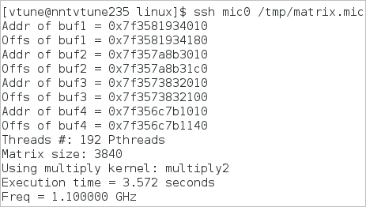

In the Source pane, you identified the code line in the multiply1 function that accumulated the highest Effective Time values. To solve this issue, do the following:
Change Algorithm
Note
The proposed solution is one of the multiple ways to optimize the memory access and is used for demonstration purposes only.
Open the multiply.h file from the sample code directory (for example, /home/sample/matrix/src).
For this sample, the multiply.h file is used to initialize the functions used in the multiply.c file.

Replace the #define MULTIPLY multiply1 with the #define MULTIPLY multiply2.
The new multiply2 function swaps the indices of the innermost two loops, in a method called loop interchange. Note in the innermost loops that three of the array references use j as the second index and the fourth reference does not use j at all. In C that last index addresses locations adjacent in memory sequence, taking advantage of cache locality to use adjacent data all in one pass, and that optimizes the memory access in the code by minimizing cache line thrash. Moreover, arranging successive computations in array order this way makes them more likely to be recognized by the compiler for vectorization.

When you build the code with the Intel® C++ Compiler, it vectorizes the computation, which means that it uses SIMD (Single Instruction Multiple Data) style instructions that can work with several data elements simultaneously. If only one source file is used, the Intel compiler enables vectorization automatically. The current sample uses several source files, which is why the multiply2 function uses #pragma ivdep to instruct the compiler to ignore assumed vector dependencies. This information lets the compiler employ the Supplemental Streaming SIMD Extensions (SSSE).
Save files and rebuild the application:
$ make mic
When the matrix.mic application is built and stored in the matrix/linux directory, copy it to the coprocessor.
Verify Optimization
Re-run the application via ssh script:

You see that the Execution time has reduced significantly and you got about 27 seconds of optimization.
Key Terms
Next Step
Optimization Notice |
|---|
Intel's compilers may or may not optimize to the same degree for non-Intel microprocessors for optimizations that are not unique to Intel microprocessors. These optimizations include SSE2, SSE3, and SSSE3 instruction sets and other optimizations. Intel does not guarantee the availability, functionality, or effectiveness of any optimization on microprocessors not manufactured by Intel. Microprocessor-dependent optimizations in this product are intended for use with Intel microprocessors. Certain optimizations not specific to Intel microarchitecture are reserved for Intel microprocessors. Please refer to the applicable product User and Reference Guides for more information regarding the specific instruction sets covered by this notice. Notice revision #20110804 |